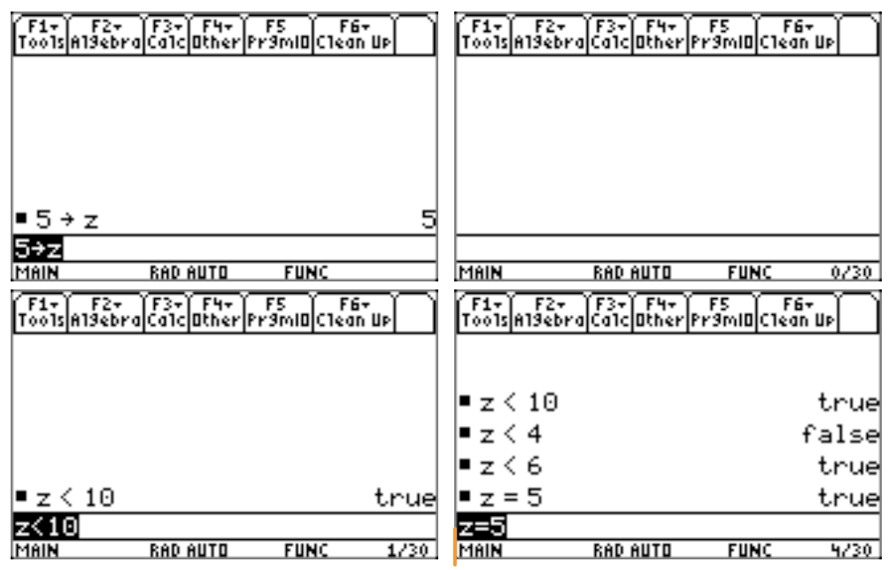
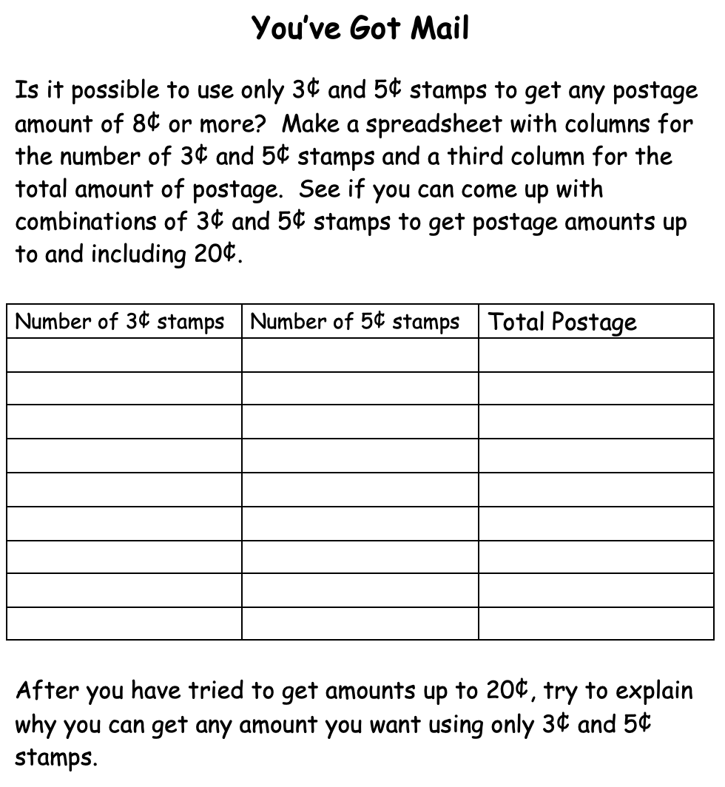
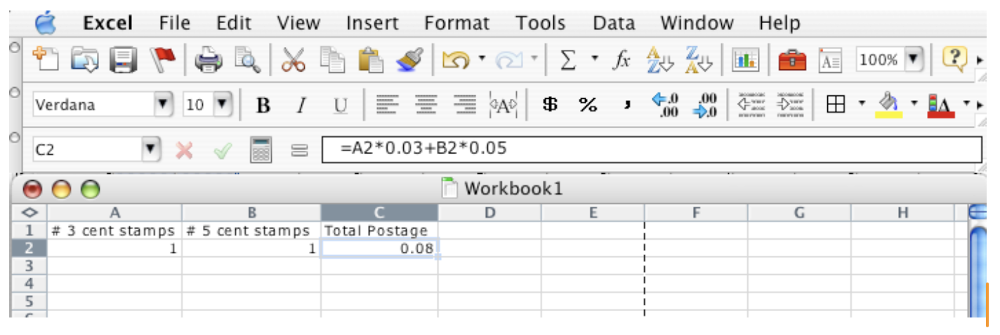

Section 4.1 What Is Algebra?
In the preparation of secondary mathematics teachers, it is important to situate the content of algebra within the overall mathematical education of the learner. Where does algebra begin? For quite a few years, there has been a call for “algebra for all” in the eighth grade (Usiskin, 1987). The Principles and Standards for School Mathematics (NCTM, 2000) and the Common Core State Standards for Mathematics (CCSS-M) (NGACBP & CCSSO, 2010) have an algebra strand that runs through the spectrum of the curriculum from pre-Kindergarten through grade 12. The traditional place for algebra has been at the beginning of secondary school (usually at the ninth grade) for most students. Why then, does NCTM and others place algebra as a strand beginning in preschool education? Here we will address two major reasons that “algebra” is now being considered at lower grades: (1) our understanding about what constitutes algebra has significantly changed over the last few decades and (2) the advent of newer technologies has provided the opportunity for students to begin abstracting ideas at younger ages.
Algebraic Reasoning
Within the traditional culture algebra has been viewed as the collection of symbol manipulations and rules that govern them. This can be seen by the remarks given by the student in the TIMSS excerpt shared at the opening of this module. Here the student states, “It’s kind of a set in stone. It’s procedure. It’s a formula. You learn the formula and you know how to do math.” This view of algebra as a collection of letters on a page has often stood in the way of exposing younger students to algebraic ideas because the feeling was that in order for students to do algebra, they must be able to use letters to represent mathematical ideas. Recent research; however, has suggested that younger students might be capable of symbolizing mathematical ideas (Carraher, Schielmann, Brizuela, & Earnest, 2006). But even if a student does not currently symbolize mathematical ideas in the traditional “algebraic” sense, does that mean they are not doing algebra? The basic assumption of the CCSS-M and NCTM Standards is that algebraic ideas develop over time and that the ability to directly symbolize is neither necessary nor sufficient to learn algebra. As you recall from our discussion of the Pirie and Kieren model for growth of mathematical understanding, the development of the concepts of algebra take place on various levels and evolve as the learner participates in experiences that advance the growth. The student may still be doing algebra even though they are not directly manipulating symbols.
To illustrate a young learner “doing” algebra, consider the following example from parenting experience. When my son was in first grade, I had taken him and his sisters to a local fast food establishment. At this particular restaurant, there was a children’s area equipped with the standard network of “gerbil tubes” for the children to climb through as they frequently took breaks from eating. Now my son became tired of climbing around and sat down next to me at the table to see what I was doing. I had been playing with my TI-89 calculator equipped with a computer algebra system (CAS) and he asked me to show him what it would do. I knew that in his classroom he was studying inequality and so I asked if he wanted to play a game. Being bored, he quickly said yes and so I explained the rules to a game I called, “Guess My Number”. The game is quite simple (as the name suggests) and so I told him that I would store a number in the calculator and his job was to guess it by using only expressions of inequalities. I stored a number in the variable \(z\) as shown in Figure 4.1.1 and then cleared the screen. My son then tried to guess the number by entering an inequality and reading the response. He then proceeded to try other inequalities until he thought he could guess the number. He thought this was a fun game and so I stored another number in \(z\) and we started again. My son was fascinated with the idea that I could change \(z\) and play again. Now this may not seem like algebra, but this simple activity was building the concept of variable in a first grader. It should also be noted that in this simple game, the three main views of variable (unknown quantity, generalized quantity, and quantities in a functional relationship) are all present. This type of algebraic reasoning is mathematics. The recognition of algebraic reasoning as a significant part of algebra has prompted us to better characterize what younger students do in mathematics and consider algebra a preK-12 endeavor.

Technology and Abstraction
Due to the traditional perspective of algebra, we have been hesitant to challenge students to abstraction before we feel they are ready. Piaget’s work has suggested that we need to be mindful of the developmental stage of our students and that younger students may not be physiologically capable of doing certain abstract tasks. Although we must acknowledge the limitations that students possess within their developmental progress toward abstraction, we must also seek experiences that will help them reach higher levels of abstraction. As in the Pirie and Kieren (1994) model, the continual advancing and folding back to expand understanding is part of the process that helps move students along. Technology is one mechanism that can assist students in the ability to abstract mathematical concepts.
Much like the example given above where a young child plays the game, “Guess My Number”, a computer algebra system (CAS) can play an important role in developing abstract representations. One might suggest that one of the most powerful pedagogical tools available in a CAS is the Define command. This command allows the student to name a mathematical expression and then act on it by its name as if it was an object. Arnon et al. (2014) use this construct in their APOS Theory. APOS Theory refers to viewing mathematical development through a four-stage structure. APOS refers to Action-Process-Object-Schema where the learner transistions through these stages much like Piaget’s stages. The learner first does some action to interact with the mathematical idea. This leads to viewing it as a process that is eventually treated as an object. Once it is viewed as an object, it can be acted on and placed into a broader structure or schema. While the Define command may seem a trivial function of a CAS, it is an important feature in representing mathematical ideas in a way that they can be acted upon and thus the learner can begin placing a mathematical idea(s) into a coherent system. Kaput, Blanton and Moreno (2008) suggest that it is the student’s interaction with notation that builds meaning of the notation. As in the “Guess My Number” game, students must choose the notation (i.e. \(\lt\text{,}\) \(\gt\text{,}\) \(=\)) and then observe the results of those choices. By this trial and error experience, meaning is developed in a much deeper way than simply listening to a teacher tell them what each symbol represents. We can all be told a definition, but it is not until we must use the definition that we obtain a gut-level understanding of its meaning. No one can do this for us. We must do it ourselves.
There is evidence to suggest that children at age 9 and 10 have the ability to represent mathematical concepts and relationships using algebraic notation (Carraher, Schliemann, Brizuela, & Earnest, 2006). Brizuela and Schliemann (2004) found that students in this age range could not only represent mathematical ideas algebraically, but could also use this notation to solve problems within an algebraic environment. This does not mean that we simply start using symbolic notation with young children. The students in the studies mentioned were first exposed to activities that helped them develop the ability to work on a more abstract level.
To illustrate how the concept of variable might be developed in young children we have previously shared the “Guess My Number” game. There are; however, other experiences that, over time, help to slowly expose the student to algebraic representation. In the elementary grades, students are required by most school districts to learn basic word processing and spreadsheet functionality. The use of a spreadsheet can help the student construct a concept image (Tall & Vinner, 1981) of variable by simply formatting one cell in relation to another. Consider the following problem posed to a group of fourth graders (Figure 4.1.2).

In response to the problem, some students began by using a spreadsheet and formating it to fit the table. A sample of the students’ approach can be seen in Figure 4.1.3.

In this instance the student clicks on the cells they wish to use in the calculation of the postage (A2 and B2). Those cell names are then expressed in the command line and the postage calculation is given by “=A2*0.03+B2*0.05”. As simple as this exercise may seem, even young children are capable of understanding what the spreadsheet is doing. The students are beginning to represent “changeable” quantities by expressions like A2 and B2. Later in this exploration, the students used the “Fill Down” command to copy the expression relative to the corresponding cells in columns \(\mathbf{A}\) and \(\mathbf{B}\) in other rows so that they could continue to test various combinations of 3¢ and 5¢ stamps. Here they were not only using the fact that the expressions in column \(\mathbf{C}\) were “changeable”, but that the values in columns \(\mathbf{A}\) and \(\mathbf{B}\) were as well. The experience that cell values can be changed and that those changes affect the postage calculation helps lay the groundwork for the concept of variable which we will discuss further in the next section.
Here we have tried to describe how technology can be used to help advance algebraic reasoning and concept development at a young age. What about secondary school students? Throughout this course we have used similar strategies tied to technology such as computer algebra systems, dynamic geometry systems, and data collection devices to give you experience implementing these approaches in both your own learning of mathematics as well as your reflection on pedagogical uses in the secondary classroom. We live in a technological world and so to think we can teach meaningful mathematics that is relevant to today’s society without the use of technology is simply misguided and certainly not supported by the decades of research on the use of technology in the teaching and learning of mathematics.
So what exactly is algebra? Some view it as an extension of arithmetic (a generalized arithmetic or number if you will). However, Davydov (1999) showed that students could actually develop algebraic structure through relationships between quantities instead. The students that Davydov worked with and the subsequent curriculum developed has been successful in allowing younger children to develop both the structural view of algebra while symbolizing these structural relationships. Schmittau and Morris (2004) used Davydov’s curriculum with elementary children in the US and found that by the end, the children could use their understanding to solve algebraic problem typically reserved for secondary school students in the US.
Algebra is more than simply moving symbols around a page. The algebraic reasoning that allows the learner to understand why certain processes work is just as important (if not more) as the ability to perform the symbolic manipulations. The research on use of computer algebra systems clearly shows that CAS can actually be used to help develop by-hand skills and conceptual understanding. In a technological world, the emphasis that used to be placed on by-hand skills needs to be reduced since many of those skills are not as important as they used to be. For instance, it was not that long ago that the curriculum required students to be able to compute \(\sqrt{3}\) to four decimal places by hand. Today, we would look at that part of the curriculum and ask why? Every calcultor has a square root button, so is there a need for proficiency at doing this computation? It is far more important that a student understand that if we multiply that 1.73205ish number by itself, we get 3. That is the concept of square root. Ability to compute it by hand is simply not necessary and so this is why the curriculum stopped requiring it. In the same sense, future generations will ask why we spent so much time making sure students could proficiently do much of the symbolic manipulation we currently require when CAS was available to allow students to focus on thinking rather than symbol pushing.
Seeing structure is at the heart of grasping algebraic concepts, but structure is often the part of the algebra curriculum we pay the least attention to when it comes to our instruction. Kaput (2008) states, "The heart of algebraic reasoning is comprised of complex symbolization processes that serve purposeful generalizations and reasoning with generalizations". Symbolization gives students the ability to organize ideas into smaller visual space as compared to use of prose. Beyond this, symbolization not only reasons with existing ideas, but also shapes new ideas as they develop. The symbols we use affect the way we see reality and so algebra encompasses far more than the symbols used, but serve as a medium by which we reason. One of the most powerful aspects of mathematics is its symbolization; however, one of the biggest obstacles of mathematics (from a learner standpoint) is it symbolization. Students must be able to unpack the symbols when using them to reason. As Kaput, Blanton, and Moreno suggest, this happens when students are given time to interact with the symbols (or even better, are allowed to create the symbols). Just like learning a language, we begin with translation between words until those words become so connected in our mental schema that we can use them interchangeably. As this process progresses, we move toward fluency. The same is true for mathematical language. Students must be given the time to move back and forth between the represented world and the world of symbols doing the representing.